4. Installation d’un serveur NestJS
Note : dans la suite il est fait parfois référence à un serveur PHP, celui référencé dans le cours [Introduction au langage PHP7 par l'exemple]. Le serveur NestJS implémente les mêmes services que ce serveur PHP.
Nous allons aborder les fonctions HTTP de TypeScript, les fonctions qui permettent d’interroger un serveur web. Pour nos tests, nous avons besoin d’un serveur web. Nous allons utiliser celui qui est développé au paragraphe Étude de cas : le serveur de calcul de l'impôt en NestJS. Ce serveur abrite un service jSON offrant les services suivants :
- [init-session] — GET main.php?action=init-session&type=json — indique au serveur que l’on veut des réponses jSON ;
- [authentifier-utilisateur] — POST main.php?action=authentifier-utilisateur : les deux paramètres postés [user, password] autorisent ou non la connexion au service jSON. Par défaut les identifiants sont [admin, admin] ;
- [calculer-impot] — POST main.php?action=calculer-impot : les paramètres postés [marié, enfants, salaire] permettent de calculer un impôt :
- marié : « oui » si marié, « non » sinon ;
- enfants : nombre d’enfants du contribuable ;
- salaire : salaire annuel du contribuable ;
- [lister-simulations] — GET main.php?action=lister-simulations — liste les simulations faites depuis le début de la session ;
- [supprimer-simulation] — GET main.php?action=supprimer-simulation&numéro=x — supprime la simulation n° x de la liste des simualations ;
- [get-admindata] — GET main.php?action=get-admindata — récupère dans un objet jSON la totalité de la base de données associée au serveur ;
- [fin-session] — GET main.php?action=fin-session : termine la session. Pour en commencer une autre l’utilisateur devra émettre l’ordre « init-session » ci-dessus ;
Nous décrivons maintenant comment installer celui-ci. Si vous ne voulez pas installer ce serveur, passez directement au chapitre Les fonctions HTTP de TypeScript. Vous ne pourrez pas tester les scripts en conditions réelles mais vous pourrez examiner le code.
4.1. Installation de Laragon
En septembre 2026, l’outil Laragon est disponible à l’URL [Download Laragon – Fast & Modern Dev Environment ]. Laragon amène avec lui des outils qui permettent d’installer un serveur PHP et le SGBD MySQL :

- en [1], un serveur web Apache ;
- en [2], le SGBD MySQL ;
- en [3], un outil de messagerie que nous n’utiliserons pas ;
- en [4], lance tous les services (Apache, MySQL, MailPit) ;
- en [5], affiche la page web d’URL [http://localhost]. Par défaut, cette URL désigne le dossier <laragon-install>\www où <laragon-install> est le dossier d’installation de Laragon ;
- en [6], lance l’Outil HeidiSQL qui permet de gérer des bases de données MySQL. C’est avec cet outil que nous créerons la base de données utilisée par le serveur de calcul de l’impôt ;
- en [7], ouvre un terminal dans lequel tous les binaires utiles à Laragon sont dans le PATH ;
- en [8], ouvre un explorateur windows dans le dossier associé à l’URL [http://localhost] ;
Le dossier d’installation de Laragon comporte les éléments suivants :
 |
- En [1], le dossier [bin] contient de nombreuses applications :
 |
- En [1], le serveur web Apache ;
- en [2], un terminal de commandes ;
- en [3], un client [git] permettant de versionner les différentes versions d’un projet ;
- en [4], un gestionnaire de bases de données ;
- en [5], un gestionnaire courrier ;
- en [6], le SGBD MySQL ;
- en [7], un autre serveur web ;
- en [8], [node.js] pour exécuter des scripts Javascript ;
- en [9], un éditeur de texte ;
- en [10], l’interpréteur PHP ;
- en [11], l’interpréteur [Python] ;
- en [12], un serveur de cache ;
Laragon ramène avec lui un environnement de développement conséquent. Dans ce cours, nous n’utiliserons que le SGBD MySQL [6] et [heidisql] pour le gérer graphiquement ;
4.2. Installation et configuration du serveur NestJS
Un serveur NestJS de calcul très simplifié de l’impôt se trouve dans le dossier nestjs-etude-de-cas de l’arborescence des scripts de ce cours :
nestjs-etude-de-cas/
├── package.json
├── nest-cli.json
├── .env.example
├── create_dbimpots.sql
├── src/
│ ├── main.ts
│ ├── main.controller.ts
│ ├── app.module.ts
│ ├── actions/
│ ├── config/
│ ├── entities/
│ ├── filters/
│ ├── model/
│ ├── responses/
│ ├── session/
│ └── utilities/
└── views/
Si vous avez déjà installé les dépendances de l’ensemble de l’arborescence (npm install à la racine, grâce aux workspaces npm décrits dans l’introduction de ce document), le dossier nestjs-etude-de-cas possède déjà son node_modules. Sinon, placez-vous dans ce dossier et exécutez :
Le serveur a besoin d’un fichier .env pour connaître les paramètres de connexion à la base MySQL créée par Laragon (voir ci-dessus) ainsi que le port d’écoute. Copiez le fichier .env.example fourni en .env puis adaptez-le :
PORT=3000
TAX_DATA_SOURCE=mysql
DB_HOST=localhost
DB_PORT=3306
DB_NAME=dbimpots-2019
DB_USER=admimpots
DB_PASSWORD=mdpimpots
CORS_ALLOWED=true
SESSION_SECRET=change-moi-en-production
- PORT : le port d’écoute du serveur NestJS (3000 par défaut).
- TAX_DATA_SOURCE : mysql pour utiliser la base de données créée ci-dessous ;
- DB_HOST, DB_PORT, DB_NAME, DB_USER, DB_PASSWORD : les paramètres de connexion à la base dbimpots-2019 que nous allons créer avec HeidiSQL (voir ci-dessous) — mêmes identifiants que ceux définis dans le script create_dbimpots.sql présenté dans l’arborescence ci-dessus ;
- CORS_ALLOWED : autorise les appels CORS depuis un client TypeScript exécuté sur un autre port.
- SESSION_SECRET : la clé utilisée pour signer le cookie de session — changez-la si le serveur doit un jour être exposé publiquement.
4.3. Création de la base de données
Pour créer la base de données MySQL nécessaire au serveur NestJS, nous utilisons une option de Laragon :
 |
- En [1], tous les services doivent être lancés ;
- en [2], l’option [Database] vous permet de gérer la base de données ;
L’option [Database] lance un utilitaire appelé HeidiSQL :
 |
- En [1], vous pouvez sélectionner divers SGBD. La valeur par défaut proposée est le SGBD MySQL. Cela convient ;
- en [2], vous ouvrez une session de HeidiSQL ;
 |  |
- En [1-2], exécutez un fichier SQL puis choisissez le fichier [create_dbimpots.sql] que vous trouverez dans le dossier [nestjs-etude-de-cas] :

L’exécution du fichier [2] va créer la base [dbimpots-2019] utilisée par le serveur de calcul de l’impôt. Pour le voir, faites F5 dans HeidiSQL pour rafraîchir l’affichage :
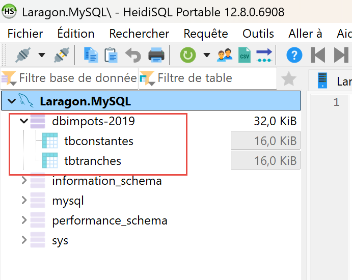 |
La base de données [dbimpots-2019] a été créée.
4.4. Lancement du serveur NestJS
Une fois le fichier .env en place (et la base de données créée), ouvrez un terminal à la racine du dossier [nestjs-etude-de-cas], puis compilez et lancez le serveur :
Pour le développement, avec redémarrage automatique à chaque modification du code source, préférez :
Dans les deux cas, la console affiche :
[Nest] ... [NestFactory] Starting Nest application...
[Nest] ... [InstanceLoader] AppModule dependencies initialized
[Nest] ... [RoutesResolver] MainController {/}:
[Nest] ... [RouterExplorer] Mapped {/main.php, ALL} route
[Nest] ... [NestApplication] Nest application successfully started
Serveur de calcul de l’impôt (NestJS) démarré sur http://localhost:3000
Point d’entrée jSON : http://localhost:3000/main.php?action=init-session&type=json
Point d’entrée HTML : http://localhost:3000/main.php?action=init-session&type=html
Le serveur NestJS a un point d’entrée unique (main.php, conservé par compatibilité bien qu’il s’agisse ici de NestJS) recevant toutes les requêtes, et un paramètre de requête action qui sélectionne le traitement à exécuter :
4.5. Tests HTML du serveur de calcul de l’impôt
Si ce n’est déjà fait, lancez tous les services de Laragon (pour MySQL) ainsi que le serveur NestJS (npm run start:prod ou npm run start:dev, voir ci-dessus). Puis, dans un navigateur, demandez l’URL http://localhost:3000/main.php?action=init-session&type=html — c’est la même action init-session que pour le serveur PHP, avec le même paramètre type=html, mais sur le port 3000 :
 |
Les identifiants sont admin/admin, exactement comme pour le serveur PHP — ils sont définis de la même façon, dans le code du serveur plutôt que dans config.json. Validez-les :
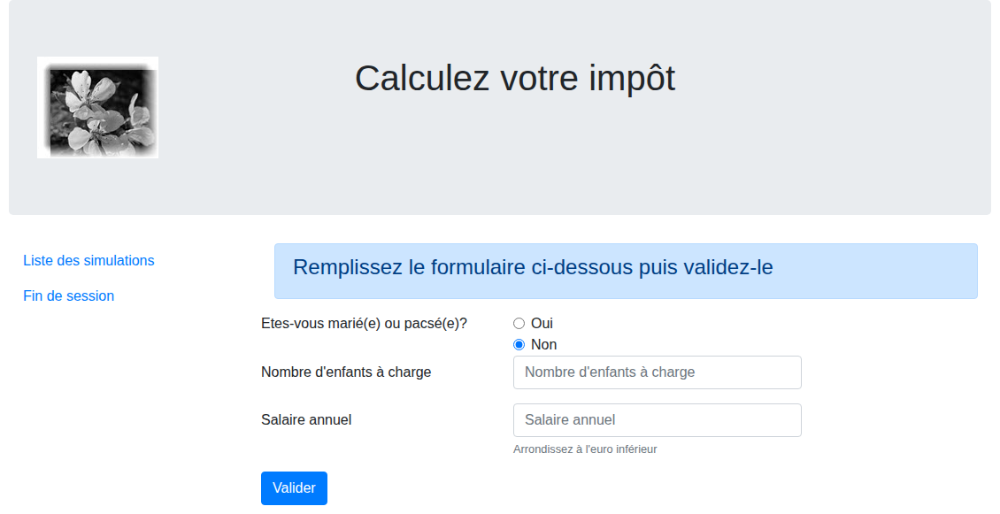 |
Remplissez le formulaire puis validez-le. On obtient la page suivante :
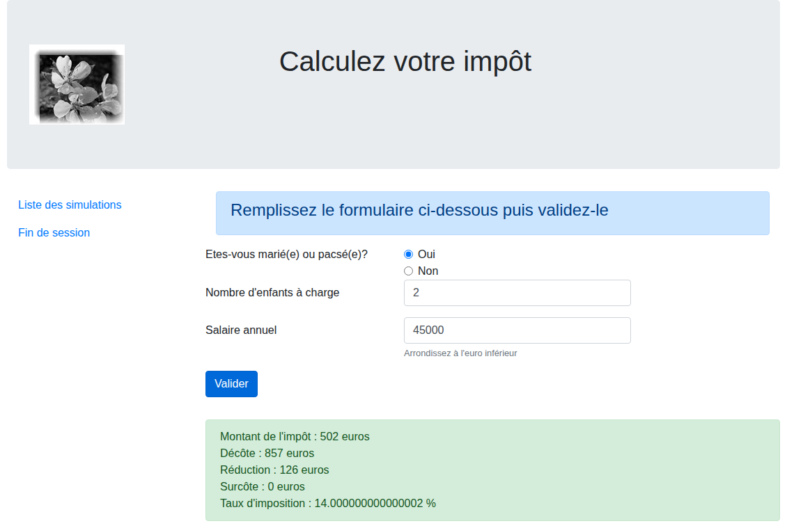 |
Le résultat du calcul de l’impôt s’affiche — cette page utilise bien la base de données que nous venons de créer. Le lien « Liste des simulations » du menu de gauche affiche l’historique des calculs de la session :
 |
Si vous obtenez ces résultats, le serveur NestJS de calcul de l’impôt fonctionne correctement, avec sa base de données MySQL. Nous sommes désormais prêts pour interroger le serveur avec des clients TypeScript. Pour cela, nous allons utiliser la version jSON du serveur.
4.6. L’API jSON du serveur de calcul de l’impôt
4.6.1. Tests Postman
Le serveur PHP se testait avec l’outil de bureau Postman. La même collection de requêtes (impots-servers-tests.postman_collection.json, fournie dans le dossier netjs-cours) fonctionne à l’identique contre le serveur NestJS : l’API jSON est rigoureusement la même — mêmes actions, mêmes paramètres, mêmes codes état. Il suffit, dans Postman, de changer le port de chaque requête (80 → 3000), ou plus simplement l’URL de base de la collection si vous l’avez définie comme variable.
L’outil Postman est disponible à l’URL [https://www.postman.com/downloads/]. Vous aurez peut-être à créer un compte.
Lancez tous les services de Laragon, puis ouvrez l’application de bureau Postman :
 |  |
- En [1-2], créez une requête HTTP pour interroger le serveur de calcul de l’impôt ;
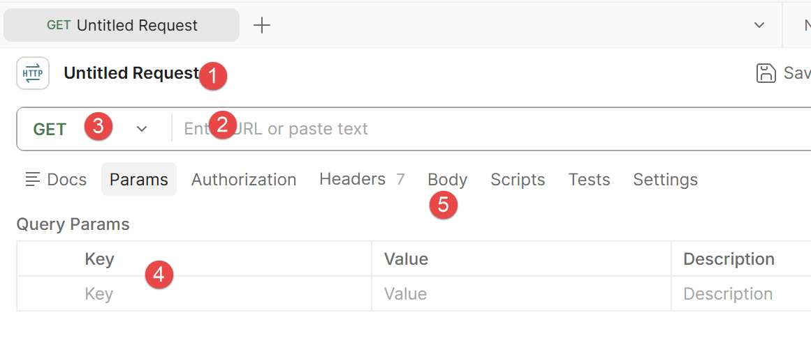 |
- En [1], vous pouvez donner un nom à votre requête HTTP. Vous pourrez la sauvegarder et la retrouver;
- en [2] : mettez l’URL du serveur que vous voulez interroger ;
- en [3] : choissez le type de requête HTTP. Nous en utiliserons deux dans ce qui suit : GET et POST ;
- en [4] : si votre requête a des paramètres du type [?param1=val1¶m2=val2&…], vous pouvez les définir ici;
- en [5] : si le type de requête est POST, c’est ici que vous défénirez les valeurs postées ;
Dans [nestjs-cours], vous trouverez une collection de requêtes HTTP vers le serveur de calcul de l’impôt que vous pouvez importer dans POSTMAN.
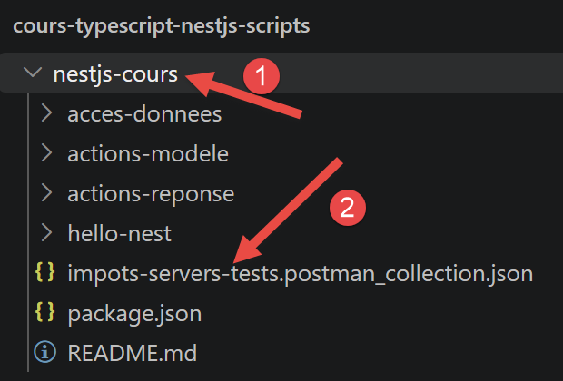
Procédez de la façon suivante. Dans Postman faites [Ctrl-O] :
 |
- Utilisez le lien [1] pour importer le fichier [impots-servers-tests.postman_collection.json] du dossier [netjs-cours] :
 |
- En [1], le nom de la collection importée ;
- en [2], son contenu. C’est une liste de requêtes HTTP vers le serveur jSON du calcul de l’impôt ;
Voyons par exemple la requête nommée [init-session-json-700]. Elle initialise une session jSON avec le serveur :
 |
- En [1], la requête HTTP est un GET ;
- en [2], l’URL interrogée. Elle demande à initier un dialogue jSON avec le serveur ;
- en [3-4], on retrouve les paramètres du GET ;
- en [5], pour envoyer la requête au serveur du calcul de l’impôt ;
Avant d’envoyer la requête assurez-vous que vous avez bien lancé les services de Laragon. La réponse jSON du serveur est la suivante :
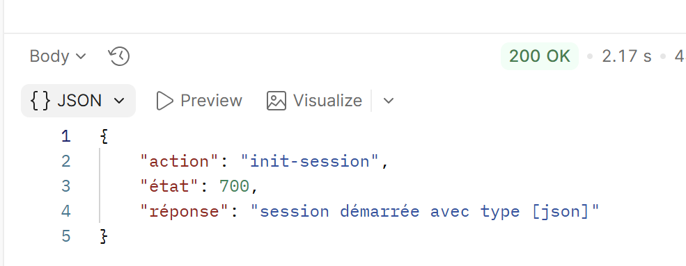 |
Utilisez maintenant la requête nommée [init-session-703] :
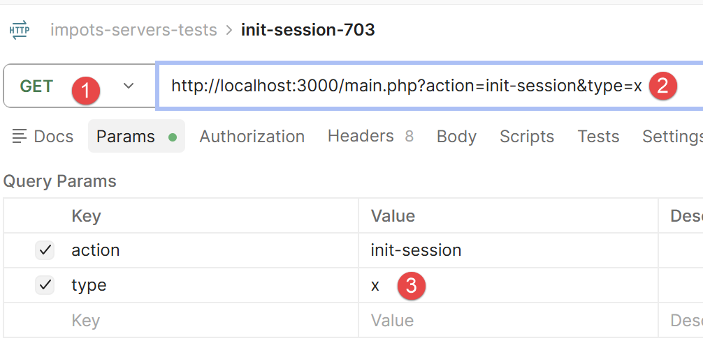
La requête [1-3] est invalide. En effet les paramètres doivent être du type [?action=xx&type=yy] où type peut être ‘html’, ‘xml’ ou ‘json’. Le type ‘x’ ne sera pas reconnu. La réponse jSON du serveur est la suivante :
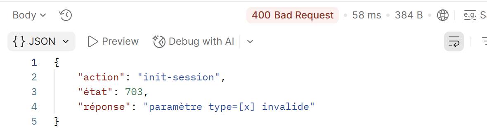 |
Rejouez la requête [init-session-json-700] pour redémarrer une session jSON. Puis jouez la requête [authentifier-utilisateur-200] pour vous identifier :
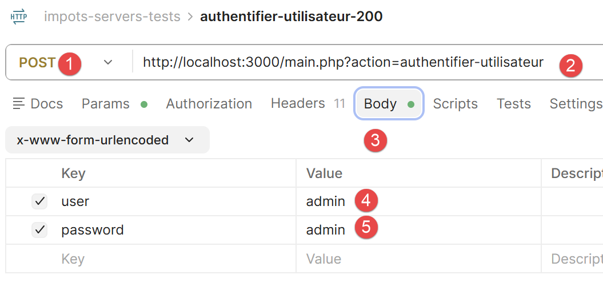 |
- En [1], la requête est un POST ;
- en [2], l’URL d’authentification ;
- en [3], le corps du POST qui contient les valeurs postées ;
- en [4-5], les deux valeurs postées. Ce sont les identifiants de l’administrateur de l’application. Ils sont définis dans le fichier [config.service.ts] du serveur ;

La réponse jSON du serveur est la suivante :
 |
Une fois que vous êtes authentifié, vous pouvez faire un calcul d’impôt. Utilisez pour cela la requête [calculer-impot-300] :
 |
- En [1], c’est une requête POST ;
- en [2], l’URL appelée ;
- en [3-4], les trois valeurs postées ;
La réponse jSON est la suivante :
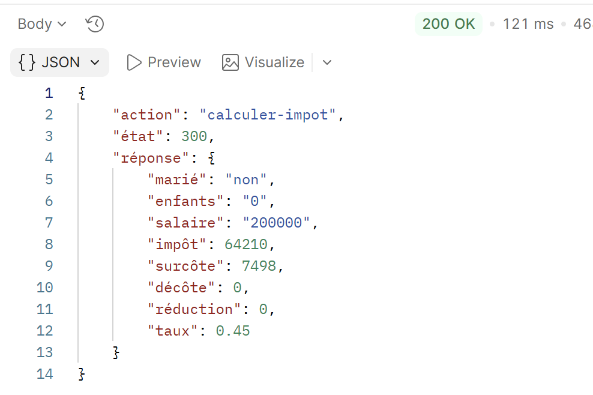 |
Rejouez la requête plusieurs fois en changeant les valeurs postées. Ceci fait, jouez la requête [lister-simulations] qui va afficher la listes des simulations que vous avez faites :
 |
- La requête GET [1-4] a le seul paramètre [action]. La réponse jSON est la suivante :
 |
C’est la liste des simulations que vous avez faites.
Utilisez la requête [supprimer-simulation-600] pour supprimer une simulation :
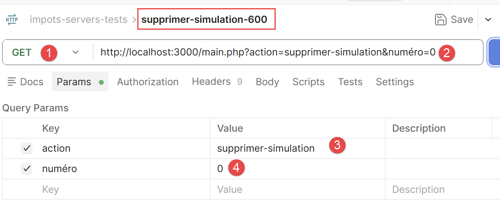 |
- En [2], l’URL est interrogée avec un GET. Elle comprend deux paramètres [action, numéro]. [numéro] est le n° de la simulation que vous voulez supprimer de la liste des simulations. Ici le numéro 0 désigne la première simulation de la liste ;
La réponse jSON du serveur est la suivante :
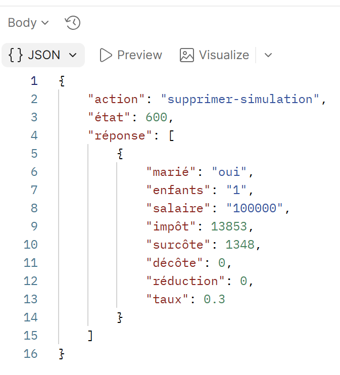 |
La réponse jSON est la liste restante des simulations après suppression de l’une d’entre elles ;
Enfin vous pouvez terminer la session avec la requête [fin-session-400] :
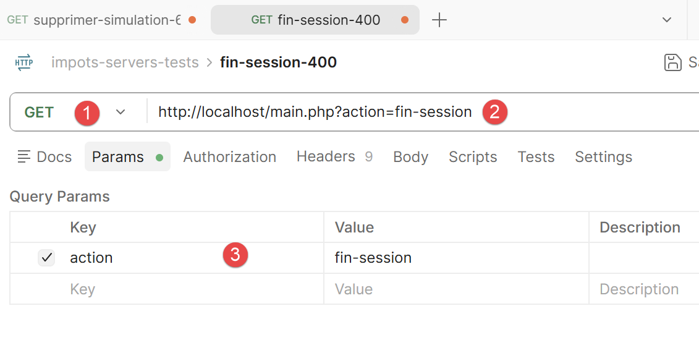 |
L’URL [1-2] n’a que le paramètre [action] (3). La réponse jSON est la suivante :
 |
4.6.2. Tests curl
Nous pouvons utiliser également l’outil [curl] pour tester les services jSON du serveur. Toutes les requêtes qui suivent utilisent la même session HTTP (l’option -b/-c cookies.txt de curl conserve le cookie de session entre deux appels, comme le ferait un navigateur ou Postman) :
Démarrons une session jSON avec l’action [init-session] :
L’état 700 confirme le démarrage de la session — c’est le même code que renvoyait le serveur PHP. Authentifions-nous maintenant avec l’action [authentifier-utilisateur] — une requête POST, avec un seul paramètre dans l’URL (action) et les identifiants postés :
curl -b cookies.txt -c cookies.txt -X POST "http://localhost:3000/main.php?action=authentifier-utilisateur" \
-d "user=admin&password=admin"
{
"action": "authentifier-utilisateur",
"état": 200,
"réponse": "Authentification réussie [admin, admin]"
}
On peut désormais calculer un impôt avec l’action [calculer-impot], toujours en POST avec les trois paramètres postés marié, enfants et salaire :
curl -b cookies.txt -c cookies.txt -X POST "http://localhost:3000/main.php?action=calculer-impot" \
-d "marié=oui&enfants=2&salaire=45000"
{
"action": "calculer-impot",
"état": 300,
"réponse": {
"marié": "oui",
"enfants": 2,
"salaire": 45000,
"impôt": 502,
"surcôte": 0,
"décôte": 857,
"réduction": 126,
"taux": 0.14
}
}
On retrouve exactement les mêmes valeurs (502 € d’impôt, décôte de 857 €, réduction de 126 €, taux de 14 %) que celles affichées dans le navigateur à la section précédente — les deux versions HTML et jSON partagent le même moteur de calcul. La liste des simulations s’obtient avec l’action [lister-simulations], un simple GET :
{
"action": "lister-simulations",
"état": 500,
"réponse": [
{
"marié": "oui", "enfants": 2, "salaire": 45000,
"impôt": 502, "surcôte": 0, "décôte": 857, "réduction": 126, "taux": 0.14
}
]
}
Rejouez la requête [calculer-impot] plusieurs fois en changeant les valeurs postées, puis utilisez [supprimer-simulation] pour retirer une simulation de la liste (&numéro=x désigne son numéro d’ordre), et [get-admindata] pour récupérer la totalité de la base de données au format jSON (tranches d’imposition et constantes de calcul). Terminez enfin la session avec l’action [fin-session] :
Vous avez maintenant une bonne idée de l’API jSON exposée par le serveur NestJS de calcul de l’impôt — rigoureusement identique à celle du serveur PHP. Nous allons pouvoir aborder l’écriture de scripts TypeScript qui interrogent ce serveur.